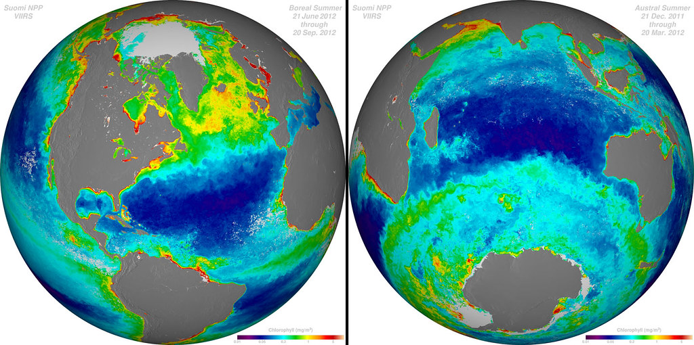
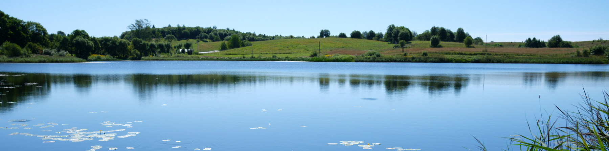

Extracting and analysing optical water quality data from satellites
Introduction
Water quality is an important issue in many human activities. Traditional methods to gain knowledge on water quality are accurate, but expensive and time consuming. Therefore, they do not cover all the water bodies and are usually taken just in one point of a lake. Yet, in larger water bodies differences of water quality between different stations might be large.
Satellite data can help to overcome the scarcity of water quality data. Using satellites we can obtain more frequent data across space and time. When it comes to using satellite data for water quality studies, it is important to remember that satellites monitor water optical features. In freshwater ecosystems there are three main optically active substances: chlorophyll-a pigment found in algae and cyanobacteria, suspended matter and coloured dissolved organic matter (also called yellow substances).
In this document we provide user friendly tools to retrieve biophysical data on lake class, describing its water quality. The method uses spectral features of water obtained through European Space Agency’s (ESA) Copernicus Sentinel-2 satellites. The method is based on machine learning random forest algorithm and assigns the lake to one of the four classes:
Clear class. Such lakes have water transparency is >2 m in medium deep and deep lakes and >1.3 m in shallow lakes, low concentrations of optically active substances (they do not affect water spectral features). Lakes in this class usually also have good ecological status as defined in the EU Water Framework Directive.
Moderate class. Water transparency is still good or high, but chlorophyll-a concentration is between 7 and 20 mg/m^3 (higher than in clear class), indicating light algal and cyanobacterial blooms.
Chla-dominated class. Water transparency is <2 m in medium deep and deep lakes and <1.3 m in shallow lakes, the concentration of chlorophyll-a is often > 20 mg/m^3. Such lakes usually have bad or poor status.
Turbid class. Water transparency is <2 m in medium deep and deep lakes and < 1.3 m in shallow lakes, but concentration of chlorophyll-a is similar to that in the moderate class (between 7 and 20 mg/m^3). Low water transparency is more likely related to higher concentrations of coloured dissolved matter.
Further details about the model and its validation are described in the open access paper by Grendaitė and Stonevičius (2022). The model accuracy on test set varied among classes: 27% for Turbid class, 70% for Chla-dominated class, 81% for Moderate class and 85% for the Clear class.
The code presented here adapts and applies the aforementioned model to any other lake coordinates. It first retrieves Sentinel-2 data using Google Earth engine (GEE). Then the data are filtered and class models applied.

Model code
To help you extract and process temperature data we have two user friendly tools. The main code to access and download the data from GEE is written in Python and is available through Google Colaboratory environment. Google Colaboratory is a free online resource which already has Python libraries installed, so you can run the scripts easily, even if you do not have programming skills. To access the satellite data collections through Google Earth Engine, you need to have a Google account(if you do not have Google account, you can sign up here. Then use your Google account to register for the Google Earth Engine, which will ask you to authorise your account.
Next you can go to the model scripts on Google Colaboratory using the link below 
When you open the Google Colab notebook, make a copy of it in your own Google Drive (Select File and then Make a copy in Drive). You can edit your copy of the notebook, if you need, but don’t forget to save. Further instructions on how to use the notebook are found in the notebook itself.
To extract water quality (optical) data you will need to create and upload a csv file with codes, names and coordinates of you sites, like in this example file. You will also need to upload the auxiliary files with lake class classification models, which you can download here (but make sure you unzip the files before uploading them to the Google Colaboratory). The downloaded lake class data will look like this example file. In this example we only extract data for three lakes (three rows in the coordinate example file), but you can add as many lakes (rows) as you need. However, remember not to select coordinates close to the shore (ideally more than 50 meters) and don’t put points too close to each other, as the resolution of the data is 100 meters.
Once you have the file with satellite data retrieved for the selected coordinates, you can use this R markdown script to plot your results, like in the image below. In this code we also compare satellite data with in situ monitoring data in Lithuanian lakes. If you want to look at the results of this script without having to run it, you can see it here

Application of the model
The model to assess lake class data could be used widely to monitor water quality across large scales and at high temporal resolution. As Europe is implementing its Water Framework Directive and has set the mission to Restore our ocean and waters wide scale availability of lake quality data is important. The code and algorithms presented here can be also used for various research projects, where scientists need to correlate biological characteristics to lake quality. The algorithm to groups lake classes has been developed for temperate lakes, and further work should be done to test how well it applies to lakes in, for example, tropical or arid regions.
